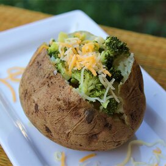

Microwaved Baked Potato

If you want the yummy taste of a slowly baked potato but aren't patient enough, or don't have the know-how to bake it in an oven, this is for you. Give it 12 minutes and get a mouth-watering, taste bud-tingling treat.
INGREDIENTS
- 1 large russet potato
- 1 tablespoon butter or margarine
- 3 tablespoons shredded Cheddar cheese
- salt and pepper to taste
- 3 teaspoons sour cream
Steps
- Scrub the potato, and prick several time with the tines of a fork. Place on a plate.
- Cook on full power in the microwave for 5 minutes. Turn over, and continue to cook for 5 more minutes. When the potato is soft, remove from the microwave, and cut in half lengthwise. Season with salt and pepper, and mash up the inside a little using a fork. Top the open sides with butter and 2 tablespoons of cheese. Return to the microwave, and cook for about 1 minute to melt the cheese.
- Top with remaining cheese and sour cream, and serve.
Home